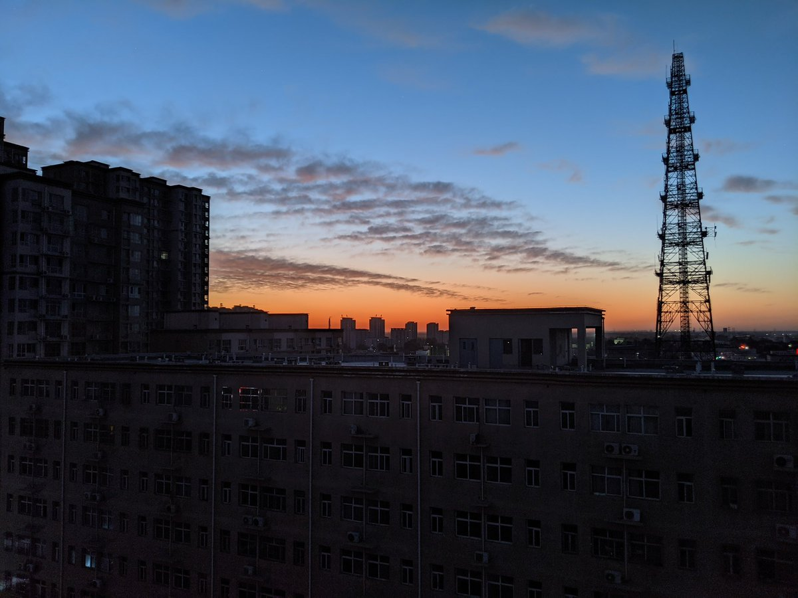

dowond yang
@YangDowond
上大学的时候，我特别喜欢在晚上在宿舍里用点兴奋剂（比如噻吩丙胺或者司来+PEA再配上点安非他酮）然后就这么等待着黎明…
那时候宿舍的舍友都很好，我尤其喜欢看着他们的睡觉百态
然后静静等到黎明的时候就会去阳台拍点照片，因为是在北方，而且我喜欢冬天玩这种玩法，会别有一番感觉（主要就是冷风吹进来会强化兴奋剂效果）我总是在幻想自己是一个等待黎明，等待白天充满青春活力，和所有人都相处的很好的健全人，那个时候真的是很单纯啊hh
大学毕业之后真的是再也没用过兴奋剂了，也再也没有闲心去等待着那充满奇迹的黎明了
（不过不建议这么玩，睡眠是很重要的）
